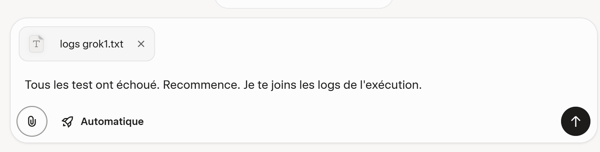
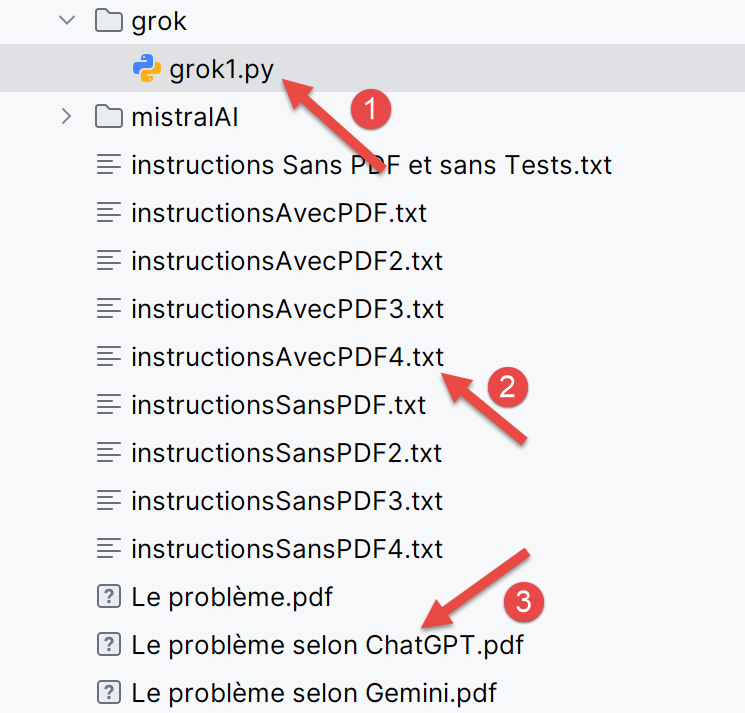
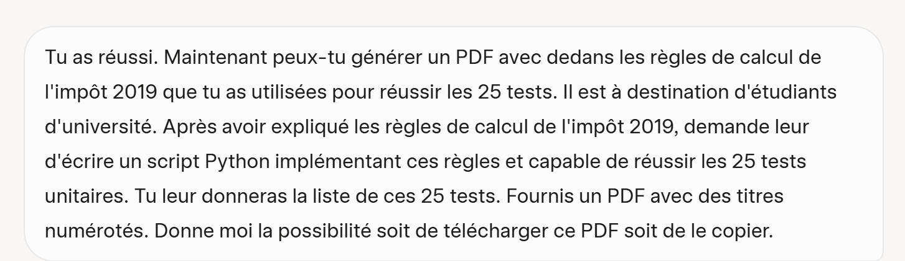
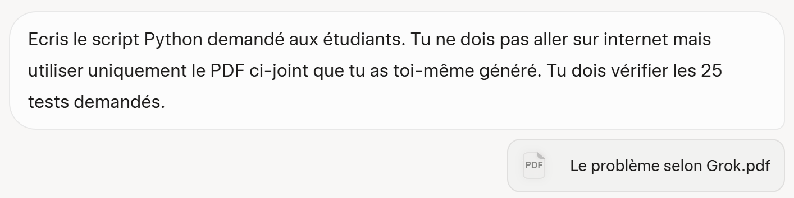

6. Risoluzione dei tre problemi con Grok
6.1. Introduzione
- In [1], l’URL dell’IA Grok di proprietà dell’azienda xAI [https://x.ai/company];
- In [2], la cronologia delle tue conversazioni. Per accedervi, devi creare un account;
- In [3], ponete la vostra domanda;
- In [4], puoi allegare dei file;
- In [5], avviate l’esecuzione di IA;
A differenza di Gemini e ChatGPT, non ho riscontrato limiti relativi al numero di domande, al tempo o al numero di file allegati. Ciò non significa che tali limiti non esistano.
6.2. Problema 1
 |
Grok risponde correttamente a questa domanda.
6.3. Problema 2
Si chiede a Grok di risolvere il calcolo dell’imposta utilizzando il file PDF generato da ChatGPT e gli si forniscono le istruzioni in un file di testo.
 |
Il file di testo è quello già utilizzato con i due IA testati, ma vi sono stati inseriti i 25 test convalidati da ChatGPT e Gemini. Il PDF utilizzato è quello generato da ChatGPT:
Grok fornisce quindi uno script molto pulito ma trasferito in PyCharm; praticamente nessun test viene superato. Gli fornisco quindi i log dei suoi errori:
 |  |
Questa volta, Grok supera tutti i 25 test. In [1-3], vengono mostrati lo script [grok1] generato e i due file allegati alla domanda.
6.4. Problema 3
Questa volta non viene fornito il file PDF con le regole di calcolo. Grok dovrà trovarle su Internet. Le istruzioni testuali contenute nel file [instructionsSansPDF5.txt] gli forniscono gli stessi 25 test da verificare, come in precedenza.
 |
Grok riesce quasi al primo colpo. Genera uno script che supera 24 test su 25. Gli vengono forniti i relativi log.
 |  |
Al secondo tentativo funziona. In [1], lo script generato da Grok; in [2], le istruzioni da seguire.
Ora gli chiediamo di generare un PDF che spieghi le regole di calcolo che ha utilizzato per superare i 25 test:
 |
Grok non genera quindi un PDF, ma un file [MarkDown]. Ho utilizzato uno strumento gratuito per trasformarlo in PDF. Inoltre, PyCharm è in grado di leggere i file [MarkDown]:
 |
6.5. Problema 4
Per convalidare il file PDF generato in precedenza, lo si inserisce in Grok.
 |
La sua prima versione è corretta. Lo script supera tutti i 25 test. In realtà, i file IA non sembrano deterministici. È possibile porre loro due volte la stessa domanda e vedere che le loro risposte divergono. È stato proprio questo il caso con Grok. La prima volta avevo tralasciato di specificare che non doveva collegarsi a Internet e utilizzare esclusivamente il suo PDF. Di conseguenza, ha prodotto uno script errato. Gli ho fornito i suoi log e lì ho notato che si collegava a Internet per verificare alcune cose. Nella domanda sopra riportata, gli ho chiesto di non farlo. Di conseguenza, nel complesso Grok ha funzionato bene.